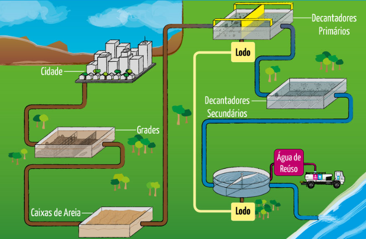
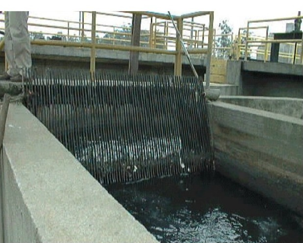

Planta do Projeto
Em nossa pesquisa utilizamos uma planta disponibilizada no site da Sabesp:

Fonte Sabesp
Em nossa pesquisa utilizamos uma planta disponibilizada no site da Sabesp:
Fonte Sabesp
O nosso projeto se consiste em produzir uma estação de tratamento de esgoto (ETE) em uma cidade ficcional de 50 mil habitantes.
Para confeccionar uma Estação de tratamento o primeiro passo a ser dado é saber a vazão de 50 mil pessoas. Em média uma pessoa gasta 160 litros de esgoto por dia então 50 mil pessoas gastam 8 milhões de litros por dia de acordo com o site: aio
A primeira etapa da estação de tratamento é a partir da gradeação impedindo que dejeitos com uma expessura elavada sejam intersectados pela grade.
Em geral são feitos dois processos de gradeamento, o primeiro com grades grosseiras e o segundo com grades médias, as grades grosseiras medem de 4 à 10cm de espessura enquanto as grades médias medem de 2 à 4cm de espessura.
Fonte PDF Base